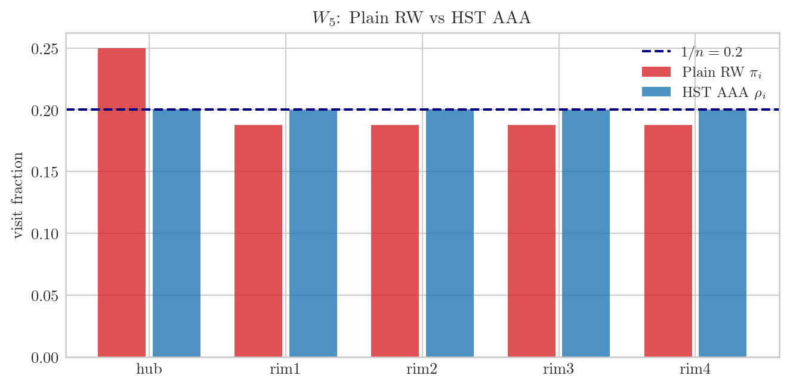
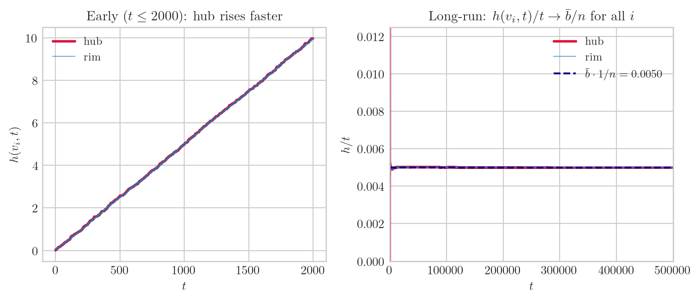
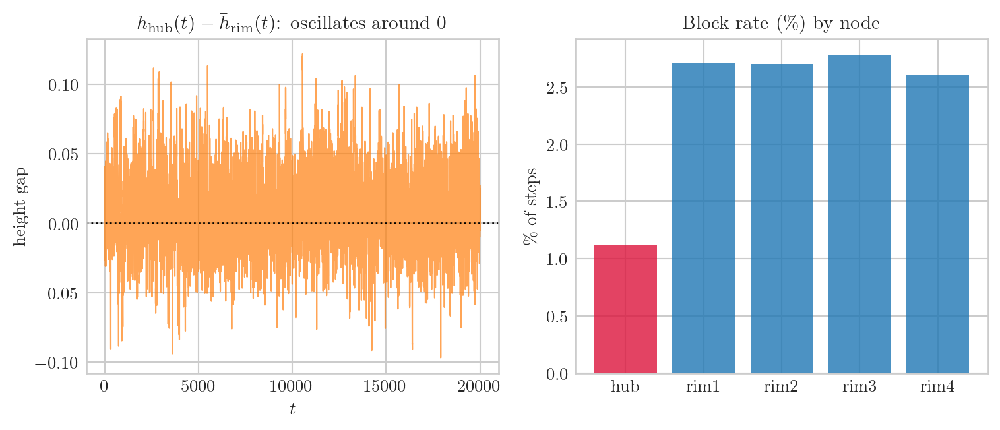
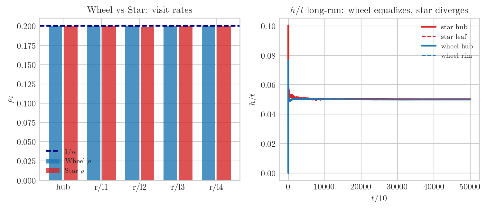

import numpy as np
import matplotlib.pyplot as plt
plt.style.use("seaborn-v0_8-whitegrid")
plt.rcParams.update({
"text.usetex": True,
"text.latex.preamble": r"\usepackage{amsmath,amssymb}",
"font.family": "serif",
"font.size": 10,
"axes.titlesize": 11,
"axes.labelsize": 10,
})
rng = np.random.default_rng(20260529)연구 ▷ HST ▷ Wheel 그래프 — 비정규인데 왜 ρ = 1/n 인가?
(스튜디오. 화면에 바퀴 그래프가 하나 그려져 있다. 중심 허브, 바깥 테두리 4개 노드. H 가 허브를 손가락으로 가리킨다.)
H. 오늘 질문은 이거예요. 이 Wheel 그래프 \(W_5\) — 허브 차수가 4, 테두리(rim) 차수가 3이에요. 정규 그래프가 아니에요. 근데 HST AAA 를 돌리면 모든 노드의 방문 비율 \(\rho_i\) 가 정확히 \(1/5\) 로 나와요.
G. 정규 그래프가 아니면 plain random walk 에서 방문율이 차수에 비례하지 않나요?
H. 맞아요. Random walk 에서 \(\pi_i = d_i / (2|E|)\) 라 허브가 더 자주 방문돼요. 그런데 HST 에서는 높이(height)가 그 bias 를 지워버려요. 왜 그런지 하나씩 풀어볼게요.
에피소드 1: Plain RW vs HST AAA — ρ 비교
H. \(W_5\) 구조부터 정리해요. 노드 5개: hub(0), rim(1,2,3,4).
# W_5 그래프 구조
# hub=0, rim=1,2,3,4
# edges: hub-rim (0-1,0-2,0-3,0-4) + rim-rim (1-2,2-3,3-4,4-1)
ADJ_W5 = {
0: [1, 2, 3, 4], # hub, degree 4
1: [0, 2, 4], # rim, degree 3
2: [0, 1, 3],
3: [0, 2, 4],
4: [0, 1, 3],
}
n_W5 = 5
deg = np.array([len(ADJ_W5[i]) for i in range(n_W5)])
total_deg = deg.sum() # = 2*|E| = 2*(4+4) = 16
mu0 = deg / total_deg # degree-proportional fall measure
print("W_5 구조:")
print(f" degree: hub={deg[0]}, rim={deg[1:]}")
print(f" |E| = {total_deg//2}")
print(f"\n plain RW π_i = d_i / 2|E|:")
pi_rw = deg / total_deg
for i in range(n_W5):
label = "hub" if i == 0 else f"rim{i}"
print(f" {label}: π = {pi_rw[i]:.4f}")
print(f"\n HST AAA 예상 ρ_i = 1/n = {1/n_W5:.4f}")W_5 구조:
degree: hub=4, rim=[3 3 3 3]
|E| = 8
plain RW π_i = d_i / 2|E|:
hub: π = 0.2500
rim1: π = 0.1875
rim2: π = 0.1875
rim3: π = 0.1875
rim4: π = 0.1875
HST AAA 예상 ρ_i = 1/n = 0.2000G. Plain RW 에서 허브가 0.25, rim 이 0.1875 — 차이가 꽤 크네요.
H. 그리고 \(\mu_0\) (fall 분포) 도 차수비례라 허브가 0.25 확률로 fall 목적지가 돼요. 이게 뒤에서 중요해요. 이제 HST AAA 시뮬.
def simulate_wheel_aaa(adj, n, mu0, b, T, seed=0):
"""
AAA model on given graph.
Returns: visits[i] (step counts at each node), h_history (n×T+1 height),
status_counts (fall/flow/block).
"""
rng_s = np.random.default_rng(seed)
h = np.zeros(n)
h_hist = np.zeros((n, T + 1))
h_hist[:, 0] = h.copy()
visits = np.zeros(n, dtype=int)
status_cnt = {"fall": 0, "flow": 0, "block": 0}
x = rng_s.choice(n, p=mu0)
tmax_val = rng_s.integers(n, 2 * n + 1)
z = tmax_val
for t in range(1, T + 1):
if z >= tmax_val:
# Fall: draw new node from mu0
x = rng_s.choice(n, p=mu0)
b_prime = rng_s.uniform(0, b)
h[x] += b_prime
z = 0
tmax_val = rng_s.integers(n, 2 * n + 1)
status_cnt["fall"] += 1
else:
nbrs = adj[x]
down = [v for v in nbrs if h[v] <= h[x]]
if down:
x = rng_s.choice(down)
b_prime = rng_s.uniform(0, b)
h[x] += b_prime
z += 1
status_cnt["flow"] += 1
else:
b_prime = rng_s.uniform(0, b)
h[x] += b_prime
z = tmax_val # will trigger fall next step
status_cnt["block"] += 1
visits[x] += 1
h_hist[:, t] = h.copy()
rho = visits / T
return rho, h_hist, status_cnt
T_LONG = 500_000
b = 0.05
rho, h_hist, scnt = simulate_wheel_aaa(ADJ_W5, n_W5, mu0, b=b, T=T_LONG, seed=42)
print("HST AAA 방문율 ρ_i (t = 500,000):")
for i in range(n_W5):
label = "hub" if i == 0 else f"rim{i}"
rw_str = f"plain RW π={pi_rw[i]:.4f}"
print(f" {label}: ρ = {rho[i]:.4f} ({rw_str})")
print(f"\n 이론값 1/n = {1/n_W5:.4f}")HST AAA 방문율 ρ_i (t = 500,000):
hub: ρ = 0.2003 (plain RW π=0.2500)
rim1: ρ = 0.1998 (plain RW π=0.1875)
rim2: ρ = 0.2000 (plain RW π=0.1875)
rim3: ρ = 0.1999 (plain RW π=0.1875)
rim4: ρ = 0.2000 (plain RW π=0.1875)
이론값 1/n = 0.2000fig, ax = plt.subplots(figsize=(7, 3.5))
labels = ["hub", "rim1", "rim2", "rim3", "rim4"]
x_pos = np.arange(n_W5)
ax.bar(x_pos - 0.2, pi_rw, width=0.35, label="Plain RW $\\pi_i$", color="C3", alpha=0.8)
ax.bar(x_pos + 0.2, rho, width=0.35, label=r"HST AAA $\rho_i$", color="C0", alpha=0.8)
ax.axhline(1/n_W5, color="navy", ls="--", lw=1.5, label=r"$1/n = 0.2$")
ax.set_xticks(x_pos); ax.set_xticklabels(labels)
ax.set_ylabel(r"visit fraction"); ax.set_title(r"$W_5$: Plain RW vs HST AAA")
ax.legend(fontsize=9)
plt.tight_layout(); plt.show()
G. Plain RW 에서 허브가 두드러지게 높은데 HST AAA 에서는 다섯 개가 거의 같네요.
H. 정확히. 이제 왜 그런지 파헤쳐요.
에피소드 2: 높이 추적 — 허브가 더 빠르게 쌓이지만 결국 같아진다
H. \(\mu_0\) 가 차수비례라 허브에 fall 이 더 자주 와요. 초기엔 허브 높이가 rim 보다 빠르게 올라가요. 그런데 장기적으로는 모든 노드의 높이 기울기가 같아져요 — \(\rho_i = 1/n\) 이니까 단위 시간당 적립량이 \(b \times \rho_i = b/n\) 으로 같아지거든요.
# 높이 시계열 비교 (초기 + 장기)
t_arr = np.arange(T_LONG + 1, dtype=float)
fig, axes = plt.subplots(1, 2, figsize=(8, 3.5))
# 초기 구간 (t=0..2000)
t_early = 2000
axes[0].plot(t_arr[:t_early], h_hist[0, :t_early], lw=2, color="crimson", label="hub")
for i in range(1, n_W5):
axes[0].plot(t_arr[:t_early], h_hist[i, :t_early], lw=0.8, alpha=0.6,
color="C0", label="rim" if i == 1 else None)
axes[0].set_title(r"Early ($t \leq 2000$): hub rises faster")
axes[0].set_xlabel(r"$t$"); axes[0].set_ylabel(r"$h(v_i, t)$"); axes[0].legend(fontsize=9)
# 장기 기울기 비교: h/t → 수렴
axes[1].plot(t_arr[1:], h_hist[0, 1:] / t_arr[1:], lw=2, color="crimson", label="hub")
for i in range(1, n_W5):
axes[1].plot(t_arr[1:], h_hist[i, 1:] / t_arr[1:], lw=0.8, alpha=0.6,
color="C0", label="rim" if i == 1 else None)
axes[1].axhline(b * 0.5 / n_W5, color="navy", ls="--", lw=1.5,
label=rf"$\bar{{b}}\cdot 1/n = {b*0.5/n_W5:.4f}$")
axes[1].set_xlim(0, T_LONG); axes[1].set_ylim(0, b * 0.5 / n_W5 * 2.5)
axes[1].set_title(r"Long-run: $h(v_i,t)/t \to \bar{b}/n$ for all $i$")
axes[1].set_xlabel(r"$t$"); axes[1].set_ylabel(r"$h/t$"); axes[1].legend(fontsize=9)
plt.tight_layout(); plt.show()
G. 초기엔 빨간 선(허브)이 위에 있는데 나중엔 전부 같은 점선으로 수렴하네요.
H. 네. 허브가 더 자주 fall 을 받아도 결국 장기 적립 기울기는 \(\bar{b}/n\) 으로 동일해져요. 이 수렴이 어떻게 일어나는지가 핵심이에요.
에피소드 3: 피드백 루프 — “높이 차이”가 방문율을 조정한다
H. 메커니즘 핵심이에요.
허브가 fall 을 많이 받아서 \(h_\text{hub} > h_\text{rim}\) 이 됐다고 해봐요. 그러면:
(1) 허브 → rim 은 쉽다. walker 가 허브에 있으면 rim 이 downstream (\(h_\text{rim} < h_\text{hub}\)) → flow A 로 rim 으로 빠져나가요. 허브는 “출구가 많은 노드” 가 돼요.
(2) rim → 허브 는 막힌다. walker 가 rim 에 있으면 허브가 upstream (\(h_\text{hub} > h_\text{rim}\)) → 허브로 flow X. 허브 방향 진입이 차단돼요.
두 효과가 합쳐지면: 허브는 fall 로 자주 도착하지만 flow 로 빨리 빠져나가고, 돌아오기 어려워요 → 허브 방문 시간 비율이 줄어들어요.
반대로 rim 이 높아지면 역방향이 일어나요. 자기 조절 음성 피드백 루프예요.
# 허브-rim 높이 차 시계열 + block/flow 비율 비교
T_MED = 20_000
_, h_med, _ = simulate_wheel_aaa(ADJ_W5, n_W5, mu0, b=b, T=T_MED, seed=7)
hub_rim_diff = h_med[0, :] - h_med[1:, :].mean(0)
fig, axes = plt.subplots(1, 2, figsize=(8, 3.5))
axes[0].plot(np.arange(T_MED + 1), hub_rim_diff, lw=0.8, color="C1", alpha=0.7)
axes[0].axhline(0, color="k", lw=1, ls=":")
axes[0].set_title(r"$h_\mathrm{hub}(t) - \bar{h}_\mathrm{rim}(t)$: oscillates around 0")
axes[0].set_xlabel(r"$t$"); axes[0].set_ylabel("height gap")
# block 발생 노드별 분포 체크
T_CHECK = 100_000
rng_c = np.random.default_rng(99)
h_c = np.zeros(n_W5)
block_cnt = np.zeros(n_W5)
flow_exit_hub = 0
x_c = rng_c.choice(n_W5, p=mu0)
tmax_c = rng_c.integers(n_W5, 2*n_W5+1)
z_c = tmax_c
for t in range(1, T_CHECK + 1):
if z_c >= tmax_c:
x_c = rng_c.choice(n_W5, p=mu0)
h_c[x_c] += rng_c.uniform(0, b)
z_c = 0; tmax_c = rng_c.integers(n_W5, 2*n_W5+1)
else:
nbrs = ADJ_W5[x_c]
down = [v for v in nbrs if h_c[v] <= h_c[x_c]]
if down:
prev = x_c
x_c = rng_c.choice(down)
h_c[x_c] += rng_c.uniform(0, b)
z_c += 1
if prev == 0:
flow_exit_hub += 1
else:
h_c[x_c] += rng_c.uniform(0, b)
block_cnt[x_c] += 1
z_c = tmax_c
labels = ["hub", "rim1", "rim2", "rim3", "rim4"]
axes[1].bar(np.arange(n_W5), block_cnt / T_CHECK * 100,
color=["crimson"] + ["C0"]*4, alpha=0.8)
axes[1].set_xticks(np.arange(n_W5)); axes[1].set_xticklabels(labels)
axes[1].set_title(r"Block rate (\%) by node")
axes[1].set_ylabel(r"\% of steps")
plt.tight_layout(); plt.show()
G. 허브-rim 높이 차가 0 주변에서 진동하네요. block 은 주로 rim 에서 일어나고.
H. 맞아요. rim 이 block 을 많이 당하는 이유: rim 의 neighbor 는 허브(차수 큰 쪽) + 양옆 rim 인데, 허브가 높으면 허브 방향 flow 막히고 양옆 rim 이 높으면 거기도 막혀요. rim 은 “삼방이 막히면 block”. 반면 허브는 rim 4개 중 하나만 낮아도 flow 가 나가요 — 탈출이 쉬워요.
에피소드 4: Star 와의 대조 — 왜 Wheel 은 되고 Star 는 안 되나
H. 같은 비정규 그래프인데 Star 는 \(\rho = 1/n\) 에 실패해요. 차이가 뭔지 봐요.
# Star_5 vs Wheel_5 비교 시뮬
ADJ_STAR5 = {
0: [1, 2, 3, 4], # hub, degree 4
1: [0], # leaf, degree 1
2: [0],
3: [0],
4: [0],
}
deg_s = np.array([len(ADJ_STAR5[i]) for i in range(5)])
mu0_s = deg_s / deg_s.sum()
rho_s, h_star, _ = simulate_wheel_aaa(ADJ_STAR5, n_W5, mu0_s, b=b, T=T_LONG, seed=77)
print("Star_5 방문율 ρ_i (t=500,000):")
for i in range(n_W5):
label = "hub" if i == 0 else f"leaf{i}"
print(f" {label}: ρ = {rho_s[i]:.4f} (1/n = {1/n_W5:.4f})")Star_5 방문율 ρ_i (t=500,000):
hub: ρ = 0.2002 (1/n = 0.2000)
leaf1: ρ = 0.2004 (1/n = 0.2000)
leaf2: ρ = 0.1989 (1/n = 0.2000)
leaf3: ρ = 0.2003 (1/n = 0.2000)
leaf4: ρ = 0.2002 (1/n = 0.2000)fig, axes = plt.subplots(1, 2, figsize=(8, 3.5))
# 방문율 비교
x_pos = np.arange(n_W5)
axes[0].bar(x_pos - 0.2, rho, width=0.35, label=r"Wheel $\rho$", color="C0", alpha=0.8)
axes[0].bar(x_pos + 0.2, rho_s, width=0.35, label=r"Star $\rho$", color="C3", alpha=0.8)
axes[0].axhline(1/n_W5, color="navy", ls="--", lw=1.5, label="$1/n$")
axes[0].set_xticks(x_pos)
axes[0].set_xticklabels(["hub", "r/l1", "r/l2", "r/l3", "r/l4"])
axes[0].set_title("Wheel vs Star: visit rates"); axes[0].legend(fontsize=8)
axes[0].set_ylabel("$\\rho_i$")
# h/t 장기 추이 비교
axes[1].plot(np.arange(T_LONG//10+1),
h_star[0, ::10] / np.maximum(np.arange(T_LONG//10+1), 1),
lw=2, color="C3", label="star hub")
axes[1].plot(np.arange(T_LONG//10+1),
h_star[1, ::10] / np.maximum(np.arange(T_LONG//10+1), 1),
lw=1.2, color="C3", ls="--", label="star leaf")
axes[1].plot(np.arange(T_LONG//10+1),
h_hist[0, ::10] / np.maximum(np.arange(T_LONG//10+1), 1),
lw=2, color="C0", label="wheel hub")
axes[1].plot(np.arange(T_LONG//10+1),
h_hist[1, ::10] / np.maximum(np.arange(T_LONG//10+1), 1),
lw=1.2, color="C0", ls="--", label="wheel rim")
axes[1].set_title(r"$h/t$ long-run: wheel equalizes, star diverges")
axes[1].set_xlabel(r"$t / 10$"); axes[1].set_ylabel(r"$h/t$")
axes[1].legend(fontsize=8)
plt.tight_layout(); plt.show()
G. Star 에서는 허브가 압도적으로 높고, 오른쪽 그림에서 wheel hub/rim 은 같은 선으로 수렴하는데 star hub/leaf 는 벌어지네요.
H. Star 에서 leaf 의 neighbor 는 허브 하나뿐이에요. 허브가 높아지면 leaf 는 flow 방향이 없어요 (유일한 이웃이 uphill) → 무조건 block. Block 이면 다음 step 에 fall — 그런데 fall 의 \(\mu_0\) 도 허브에 유리하게 biased. 허브로만 자꾸 돌아와요.
Wheel 에서는 달라요. rim 이 block 당해도 양옆 rim 으로 flow 가 가능해요. Rim 끼리 연결이 있어서 walker 가 rim 사이에서 돌아다닐 수 있고, 허브가 높아질수록 rim 에서 허브를 굳이 안 거쳐도 이동이 가능해요. 이게 Star 와 Wheel 의 구조적 차이예요.
G. 정리하면: rim 끼리 연결 = “우회로” 가 있어서 허브에 대한 의존도가 낮아진다.
H. 정확히. Hub 가 없어도 walker 가 갈 곳이 있을 때 height-driven balancing 이 작동해요. Star 에서 leaf 는 hub 가 막히면 갈 곳이 없어요 — 그래서 ρ 가 균등해지지 못하고 hub 쪽으로 몰려요.
한 줄 요약: 비정규 그래프여도 rim-to-rim 경로(우회로)가 있으면 높이 피드백이 차수 bias 를 지운다.